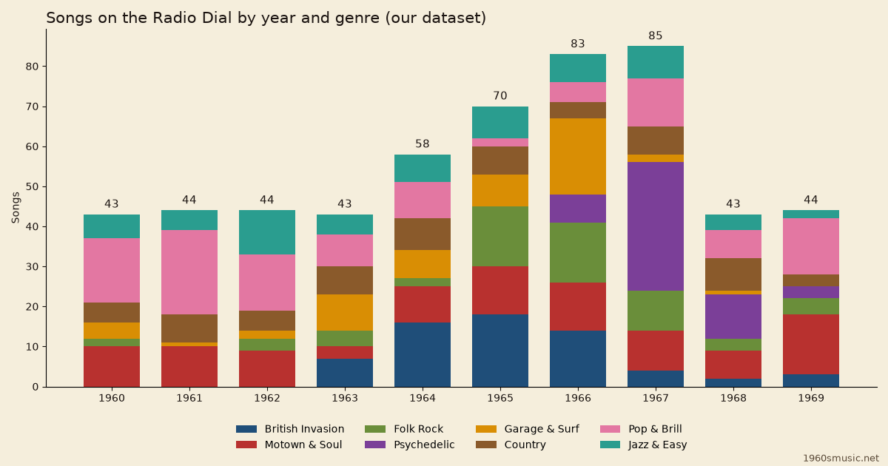

These 1960s music genres add up to 556 songs on the 1960smusic.net Radio Dial, counted by year.
Every number here comes from our dataset, a list of songs we checked and cleared for playback.
It is not a census of the decade.

Table of Contents
Psychedelic Rock Arrives in 1966
Psychedelic rock is the sharpest shift in our dataset.
It has no songs from 1960 to 1965, then 7 in 1966.
1967 holds 32 of its 53 songs (60%), and psychedelic rock fills 38% of that year on the dial.
By 1969 it is down to 3.
Read that as the dial, not the decade.
Our list has more songs for the mid-1960s than for the early years, so counts rise with it.
The psychedelic rock guide tells the story behind the numbers.
1960s Music Genres by Year
This table counts each song once, under its primary genre.
Each cell shows the count and that genre's share of the year.
Pop & Brill leads overall with 108 songs (19%), ahead of Motown & Soul with 97.
11 of the 80 year and genre cells are empty, which mostly marks styles that had not yet arrived.
| Year | British Invasion | Motown & Soul | Folk Rock | Psychedelic | Garage & Surf | Country | Pop & Brill | Jazz & Easy | All |
|---|---|---|---|---|---|---|---|---|---|
| 1960 | 0 | 10 (23%) | 2 (5%) | 0 | 4 (9%) | 5 (12%) | 16 (37%) | 6 (14%) | 43 |
| 1961 | 0 | 10 (23%) | 0 | 0 | 1 (2%) | 7 (16%) | 21 (48%) | 5 (11%) | 44 |
| 1962 | 0 | 9 (20%) | 3 (7%) | 0 | 2 (5%) | 5 (11%) | 14 (32%) | 11 (25%) | 44 |
| 1963 | 7 (16%) | 3 (7%) | 4 (9%) | 0 | 9 (21%) | 7 (16%) | 8 (19%) | 5 (12%) | 43 |
| 1964 | 16 (28%) | 9 (16%) | 2 (3%) | 0 | 7 (12%) | 8 (14%) | 9 (16%) | 7 (12%) | 58 |
| 1965 | 18 (26%) | 12 (17%) | 15 (21%) | 0 | 8 (11%) | 7 (10%) | 2 (3%) | 8 (11%) | 70 |
| 1966 | 14 (17%) | 12 (14%) | 15 (18%) | 7 (8%) | 19 (23%) | 4 (5%) | 5 (6%) | 7 (8%) | 83 |
| 1967 | 4 (5%) | 10 (12%) | 10 (12%) | 32 (38%) | 2 (2%) | 7 (8%) | 12 (14%) | 8 (9%) | 85 |
| 1968 | 2 (5%) | 7 (16%) | 3 (7%) | 11 (26%) | 1 (2%) | 8 (19%) | 7 (16%) | 4 (9%) | 43 |
| 1969 | 3 (7%) | 15 (34%) | 4 (9%) | 3 (7%) | 0 | 3 (7%) | 14 (32%) | 2 (5%) | 44 |
| All years | 64 (11%) | 97 (17%) | 58 (10%) | 53 (10%) | 53 (10%) | 61 (11%) | 108 (19%) | 63 (11%) | 557 |
What Each Genre Means
British Invasion
Beat groups from the UK followed The Beatles to America after 1964, pairing jangling guitars with tight harmonies.
Our dataset holds 64 songs here, 11% of the dial, from 1963 to 1969 and most in 1965 (18).
Motown, Soul & R&B
It covers Detroit's polished Motown formula and the grittier, gospel-fueled soul of the American South.
Our dataset holds 97 songs here, 17% of the dial, from 1960 to 1969 and most in 1969 (15).
Folk Rock
Acoustic protest songwriting plugged in, from Bob Dylan going electric in 1965 to The Byrds' twelve-string Rickenbacker.
Our dataset holds 58 songs here, 10% of the dial, from 1960 to 1969 and most in 1965 (15).
Psychedelic Rock
It used studio effects, modal drones and long improvisation to turn the era's mind-expanding experiments into sound.
Our dataset holds 53 songs here, 10% of the dial, from 1966 to 1969 and most in 1967 (32).
Garage & Surf Rock
Teenagers playing raw rock on cheap amps and combo organs sit beside reverb-heavy surf instrumentals from Southern California.
Our dataset holds 53 songs here, 10% of the dial, from 1960 to 1968 and most in 1966 (19).
Country
The decade split between the string-smoothed Nashville Sound and the twangy Bakersfield Sound of Buck Owens and Merle Haggard.
Our dataset holds 61 songs here, 11% of the dial, from 1960 to 1969 and most in 1964 (8).
Pop & Brill Building
Professional songwriting teams at New York's Brill Building powered girl groups, teen idols and, late on, bubblegum pop.
Our dataset holds 108 songs here, 19% of the dial, from 1960 to 1969 and most in 1961 (21).
Jazz & Easy Listening
This is sophisticated adult pop: swinging vocalists, lush film themes and bossa nova from composers like Burt Bacharach and Henry Mancini.
Our dataset holds 63 songs here, 11% of the dial, from 1960 to 1969 and most in 1962 (11).
How We Counted
The Radio Dial lists 557 songs across eight stations, and 556 of them are unique.
Wild Thing by The Troggs sits on two stations, so it is counted in both.
Each song sits under the release year recorded in our list.
FAQ
What were the main 1960s music genres?
Our dataset sorts the Radio Dial into eight genres.
They run from British Invasion and Motown to psychedelic rock and easy listening.
When does psychedelic rock appear in the Radio Dial?
Psychedelic rock first appears in 1966 with 7 songs.
It peaks in 1967 with 32.
Which genre has the most songs on the dial?
Pop & Brill Building has the most, with 108 songs.
Motown, Soul & R&B follows with 97.
Do these counts show which genres were most popular?
No, they show what is on our Radio Dial.
The counts reflect how we built the list, not how popular each genre was.
Browse every genre on the data index or return to the 1960s year guides.
Listen on the Radio Dial to hear these 1960s music genres for yourself.